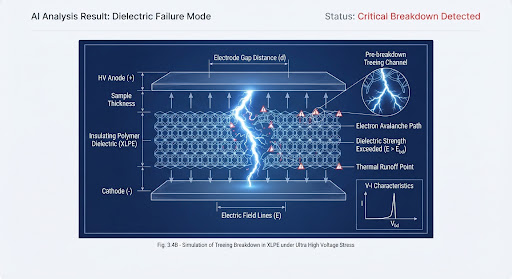

verified검수 진행 현황
4/5 항목 검토 완료검수가 완료되어야 개인 단어장에 영구 저장됩니다. AI 분석 결과를 꼼꼼히 확인하고 필요한 경우 직접 편집해 주세요.
cloud_done실시간 검수/수정 내역 자동 임시 저장됨 (페이지 이동 시 안전 보존)
category
기본 및 학술 분류
항목 1~4
표준 분류
전자전기공학 (Electrical & Electronic Engineering)
school
세부 전공
expand_more
표준 영문 표기
Dielectric Breakdown
/ˌdaɪ.ɪˈlɛk.trɪk ˈbreɪk.daʊn/
단어 재추천
edit_note
menu_book
정의 및 예문 문맥
항목 5~7
auto_awesome
Dual Verified
ISO/IEEE
The failure of an insulating material to prevent electric current flow under high voltage.
재작성 가능
고전압 하에서 절연 물질이 전류의 흐름을 막지 못하고 파괴되는 현상
학술 코퍼스
"The dielectric breakdown of the ceramic insulator occurred at 15 kV/mm during high-voltage stress testing."
고전압 스트레스 테스트 중 15 kV/mm에서 세라믹 절연체의 절연 파괴가 발생했다.
SVG + AI Render

E > E_crit
Fig. 4.2 Breakdown Vector
draw
AI 자동 생성 개념도 (단어별 자동 생성)
최종 검수 체크리스트